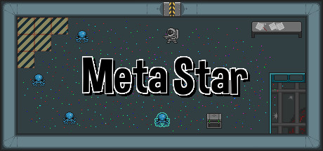

Meta Star
Meta Star
Details
|  | |
| Playtime | Not Played |
| Last Activity | Never |
| Added | 15/04/2020 |
| Modified | Never |
| Completion Status | Not Played |
| Source | Steam |
| Platform | PC |
| Release Date | 23/08/2017 |
| Community Score | 58 |
| Critic Score | |
| User Score | |
| Genre |
Action Early Access Indie RPG |
| Developer |
Lost-Ride Studios |
| Publisher |
Lost-Ride Studios |
| Feature |
Partial Controller Support Single Player |
| Links |
PCGamingWiki Community Hub Discussions Guides Store Page News |
Description
Have you ever been playing a game and wondered, "Why can't I
fly!?" or "I wish I could customize my spaceship!"?
META STAR IS THE ANSWER! Race the rest of the
internet to beat the game, and the winners get to tell the developers
what to include in the next update! And oh yea, it's FREE (for a
limited time)!
Meta Star will be an epic sci-fi Action-RPG focused on player choice, but currently it is a visceral single arena shooter. You take control of a mysterious figure on a mysterious mission, and are striving to discover what this "Meta Star" nonsense is all about. Take out aliens with your Energy Rifle, and make choices that can drastically change the way the game is played. The storyline changes after each update, so you'll need to continue to play to discover all of the Meta Star's mysteries.
Perhaps more importantly, with each update new features are added and the storyline changes, but the ideas for those features come directly from the players! Who knows what Meta Star will become in the future! Do you want more customization? Character choices? Achievements? Lasers? Hats? Or something more fundamental, like a mini-game, options screen update, or cameo? Even something off the wall, like a space plant simulator or a mythical pet rock? The question to our community is, what amazing things can you think of?!
The first person to beat Meta Star during each release cycle requests one "Feature" to be included in the next release. Additionally, all those that complete the game, but are not first, will be entered into a drawing. The winner of the drawing will also describe a "Feature" to be used in the next release.
Smaller "tweaks" will be awarded to members of the community based on finding bugs, providing art/music, and any other acts of kindness! Stay tuned to the forum and the announcement section for how to participate!
In addition to Meta Star, players are able to access the entirety of Meta Trophy from within the game! Meta Trophy was an early attempt at using the Feature Request system against a static fantasy RPG, and will give you a taste of the types of quick changes that can evolve in a game of this kind.
In addition to the requests being implemented based on player submissions, developer-led updates will also be included within Meta Star each release cycle. Our early plans for the first few releases include general polish, cut-scene skipping abilities, a new weapon, and of course story updates. Also, we will strive to make each release unique, both from a story perspective and from a "how to beat the game" perspective!
One final note: The developers hold the rights to change any of the above rules or processes at any time. However, one thing that will not change is our commitment to the community. The basis of the game will always stay the same. We will continue to iterate the game based on the community’s input. And we will keep lines of communication open with the community.
Please look towards the announcements and forum for more details about our future plans.
Gameplay
Meta Star will be an epic sci-fi Action-RPG focused on player choice, but currently it is a visceral single arena shooter. You take control of a mysterious figure on a mysterious mission, and are striving to discover what this "Meta Star" nonsense is all about. Take out aliens with your Energy Rifle, and make choices that can drastically change the way the game is played. The storyline changes after each update, so you'll need to continue to play to discover all of the Meta Star's mysteries.
Perhaps more importantly, with each update new features are added and the storyline changes, but the ideas for those features come directly from the players! Who knows what Meta Star will become in the future! Do you want more customization? Character choices? Achievements? Lasers? Hats? Or something more fundamental, like a mini-game, options screen update, or cameo? Even something off the wall, like a space plant simulator or a mythical pet rock? The question to our community is, what amazing things can you think of?!
Feature Requests
The first person to beat Meta Star during each release cycle requests one "Feature" to be included in the next release. Additionally, all those that complete the game, but are not first, will be entered into a drawing. The winner of the drawing will also describe a "Feature" to be used in the next release.
Smaller "tweaks" will be awarded to members of the community based on finding bugs, providing art/music, and any other acts of kindness! Stay tuned to the forum and the announcement section for how to participate!
Meta Trophy
In addition to Meta Star, players are able to access the entirety of Meta Trophy from within the game! Meta Trophy was an early attempt at using the Feature Request system against a static fantasy RPG, and will give you a taste of the types of quick changes that can evolve in a game of this kind.
Early Roadmap
In addition to the requests being implemented based on player submissions, developer-led updates will also be included within Meta Star each release cycle. Our early plans for the first few releases include general polish, cut-scene skipping abilities, a new weapon, and of course story updates. Also, we will strive to make each release unique, both from a story perspective and from a "how to beat the game" perspective!
One final note: The developers hold the rights to change any of the above rules or processes at any time. However, one thing that will not change is our commitment to the community. The basis of the game will always stay the same. We will continue to iterate the game based on the community’s input. And we will keep lines of communication open with the community.
Please look towards the announcements and forum for more details about our future plans.